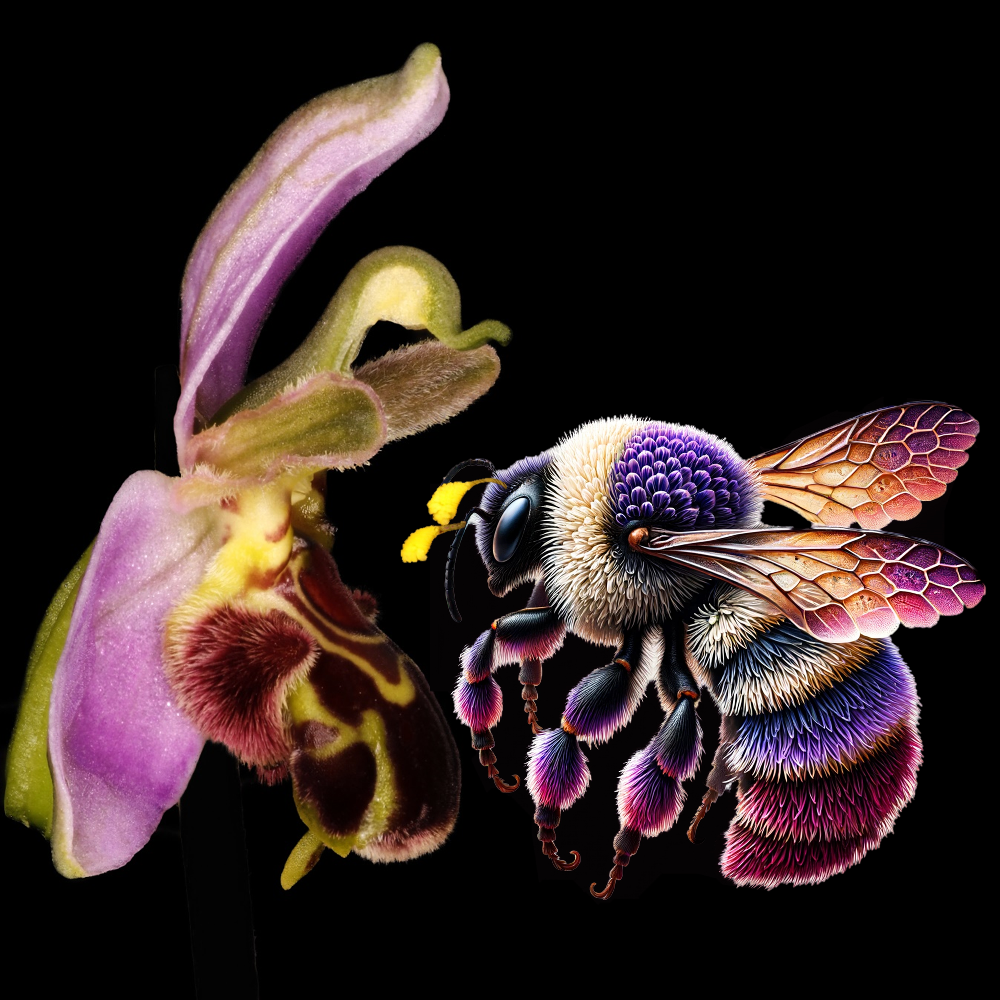

Bee orchids (Ophrys apifera) are among the most studied flowers in Europe. They are also among the loneliest. The species today reproduces almost entirely through self-pollination — a strange evolutionary endpoint for a flower whose entire architecture is built around a partner that no longer exists.
Across the genus Ophrys, flowers mimic the body of a female bee with extraordinary precision: the velvety texture, the iridescent blue speculum, even the volatile cocktail that imitates the bee's sex pheromones. Male bees are deceived into attempting to mate with the flower, and in doing so they pick up the orchid's pollinia. It is one of the most remarkable cases of sexual mimicry in the plant kingdom.
The bee that isn't there
For Ophrys apifera, the bee that was being mimicked has not been reliably observed for centuries. The flower's morphology suggests a long-tongued bumblebee of a particular size and grip — a form that does not match any extant European species. We are looking, in effect, at the silhouette of an extinction.
"Every orchid is a fossil of its pollinator. The flower outlives the bee."
Reading the flower
The genius of the system is that the flower itself preserves data. By measuring the labellum's pseudo-abdomen, the angle and depth of the column, and the precise placement of the viscidium that deposits the pollinia, we can reconstruct constraints on the missing bee: roughly how large it was, how strong its grip needed to be, the geometry of its approach.

This is not unlike forensic anatomy. The flower is a cast of a body that no longer walks the earth. And the orchid's switch to self-pollination — the so-called "selfing transition" — is best understood not as an evolutionary triumph but as a quiet act of survival in the absence of a partner.
Why this matters now
The bee orchid story is not unique. As pollinator populations decline globally, an unknown number of plant species are entering the same trajectory: maintained for now by the architecture of a relationship that no longer functions, with selfing or vegetative propagation as a temporary stay against extinction. Some of these flowers will outlive their pollinators by centuries. Others won't.
Studying the orchids that have already crossed this line gives us a vocabulary for what's coming.